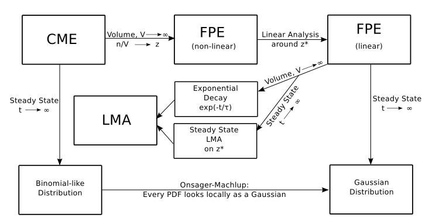
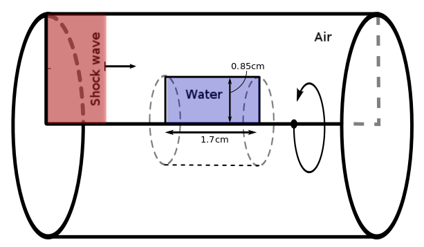

Stochastic reaction diffusion and fluid interface problems with applications to biology.
Mauricio Del Razo Sarmina
Advisors:
Randall J. LeVeque
&
Hong Qian
University of Washington
Department of Applied Mathematics
Outline
Two very relevant areas in biological modeling
- Motivation
- Deterministic or stochastic?
- Exisiting models (w/diffusion)
- Coupled diffusion model
- Application in fluorescence correlation spectroscopy
- Motivation
- Experimental setup
- Numerical setup
- Numerical Methods
- Some results
Stochastic reaction diffusion
Motivation
Understanding biochemical processes in the cell!
- Cell biochemistry → Diffusion is relevant.
- Aqueous medium → Stochastic diffusion .
- Mesoscopic scale → Stochastic reaction .
- Cell are open systems → Non-equilibrium dynamics .
- Cell are too complicated; however, simple models might
display similar qualitative behavior.
- Current SRD models are not very rigorous.
Stochastic reaction diffusion: deterministic or stochastic?
Deterministic vs. Stochastic reactions
Consider:
$ A + B \overset{k_f}{\underset{k_b}\rightleftharpoons} C $
with [A] & [B] constant.
- Deterministic → Law of Mass Action (LMA)
$ \frac{d[C]}{dt} = k_f[A][B] - k_b[C] $
- One ODE for the concentration.
- Stochastic → Chemical Master Eq. (CME)
$ \frac{dP_n(t)}{dt} = -(\lambda_n + \mu_n)P_n(t) + \\
\mu_{n+1}P_{n+1}(t) + \lambda_{n-1}P_{n-1}(t) $
- Infinite ODE system for the probability distribution of the num. of molecules.
- Accounts for the discrete probabilistic nature of chemical reactions.
- Stochastic → Fokker Planck Equation (FPE)
$\frac{\partial f(z,t)}{\partial t} = \frac{\partial}{\partial z}\Bigg[ \frac{z}{\tau}f(z,t) +\frac{k_bz^*}{V} \frac{\partial f(z,t)}{\partial z} \Bigg] $
- One PDE for the probability distribution of the concentration.
- Continous approximation to the CME. - Stochastic sampling → Gillespie Algorithm
- Monte Carlo algorithm: solves for trajectories of the PDF
- When will next reaction occur?
- What is the next reaction?
Stochastic reaction diffusion: deterministic or stochastic?
Deterministic vs. Stochastic reactions.
Relation diagram between the LMA, CME and FPE:
The CME is more fundamental.
Stochastic reaction diffusion: existing models w/diffusion
Diffusion Limited Reactions.
$A + B \overset{k_S}\rightarrow C$
- Spherical A fixed at center
- Initial uniformly distributed B's around A.
- B's undergo Brownian Motion → Diffusion eq.
- B crashes with A → Diff. limited reaction
- PDF of B concentration described by the PDE:
$$ \frac{\partial u(r,t)}{\partial t} = \frac{D}{r^2}\frac{\partial}{\partial r} \left(r^2 \frac{\partial }{\partial r} u(r,t)\right) \\ u(R,t) = 0 \hspace{5mm} u(R_\infty,t) = c_0 $$
Stochastic reaction diffusion: existing models w/diffusion
Diffusion Limited Reactions
Partially diffusion controlled BC:
Flux $\propto$ Concetration
$$ 4\pi R^2 D u'(R) = \kappa u(r) \\
k_{CK} = \frac{k_S \kappa}{k_S + \kappa} $$
PDF of particles under a potential $U(r)$ follows
$$ \frac{\partial u(r,t)}{\partial t} =
\frac{D}{r^2}\frac{\partial}{\partial r}
\left(r^2 e^{-\beta U(r)}\frac{\partial [e^{\beta U(r)}u(r,t)]}{\partial r}\right)$$
Smoluchowski → Blue
Collins & Kimball → Red
Stochastic reaction diffusion: existing models w/diffusion
First Passage Time (FPT)
- Given uniformly distributed B's around A:
- What is the expected time for first encounter with A: $t_1$
- Can also ask time for second encounter starting on A boundary: $t_2$
Reaction rates related to FPT:
$$ t_1=\frac{1}{k_S c_0} \hspace{10mm} t_2=\frac{1}{k_s c_0} + \frac{1}{\kappa c_0} \\
k_{CK} = \frac{1}{t_2 c_0} = \frac{k_S \kappa}{k_S + \kappa}$$
Stochastic reaction diffusion: existing models w/diffusion
Irreversible reactions
Consider:
$ A + B \overset{k_f}{\underset{k_b}\rightleftharpoons} C $
- How to write an equation for the PDF?
- In a simulation context:
- Where to put B after backward reaction?
- Too close will immediately react!
Stochastic reaction diffusion: existing models w/diffusion
Kinetic Monte Carlo Methods (KMC)
- Simulate trajectories within the PDF (similar to Gillespie algorithm).
For $ A + B \overset{k_f}{\underset{k_b}\rightleftharpoons} C $
- Model Brownian motion with Random Walks for A,B & C in a box.
- Diffusion limited forward reaction
- Introduce an unbinding radius: place B a distance $U_r$ after backward reaction.
- Use Smoluchowski's model for each A molecule, where $U_r=\frac{1}{2}(\frac{V_{box}}{nA})^{1/3}$
- Note: $U_r$ will depend on A concentration $\Rightarrow$ Several iterations to find $U_r$
- Only simulates trajectories.
- Not accurate close to A molecules.
- Lacking rigorous mathematical/physical foundation.
Stochastic reaction diffusion: coupled diffusion process
Coupled diffusion model (first step)
- Rigorous mathematical foundation: stochastic process corresponds to PDE.
- Only one A fixed at the center, but incorporates irreversible reactions.
- $f_u, f_b:$ probability distribution of unbinded or binded B.
- Generalizes easily to many B's
$$ \frac{\partial f_u(r,t)}{\partial t} = \frac{D_u}{r^2} \frac{\partial }{\partial r} \left( r^2 e^{-\beta U_u(r)}
\frac{\partial}{\partial r} e^{\beta U_u(r)} f_A(r,t)\right) -\alpha(r)f_u(r,t) + \lambda(r)f_b(t) \\
\frac{\partial f_b(r,t)}{\partial t} = \frac{D_b}{r^2} \frac{\partial }{\partial r} \left( r^2 e^{-\beta U_b(r)}
\frac{\partial}{\partial r} e^{\beta U_b(r)} f_A(r,t)\right) + \alpha(r)f_u(r,t) - \lambda(r)f_b(t) $$
- Using $\alpha(r)=\frac{k_0 \delta(r-R)}{4\pi r^2}$, $U_u=0$ and $\lambda(r)=0$
$\Rightarrow$ recovers Collins & Kimball
- Additionally using $\lambda(r)=\frac{k_1\delta(r-U_r)}{4\pi r^2}$ $\Rightarrow$ consistency with KMC model.
Stochastic reaction diffusion: applications
Fluorescence correlation spectroscopy (FCS)
- FCS: experimental technique to measure diffusion coefficients and reaction rates.
- It is based on correlations of linear fluctuation around equilibrium.
- Fluctuations contain information of diffusion and reaction

- Correlation curves match for linear reactions.
- Slightly deviate for nonlinear reactions
- They match in asymptotic cases:
nonlinear $\rightarrow$ linear
Fluid shock wave/interface problems
Motivation
Interested in traumatuc brain injury (TBI) caused by shockwaves:
- Blast waves (civilians and soldiers)
- Car/bike accidents
- Boxing
- Shock waves travel from air to your skull and brain (interfaces).
- Experimentalists have interfaces in their experimental setups.
- Cells might behave as interfaces too.
Not limited to TBI, original motivation began with localized drug delivery.
Fluid shock wave/interface problems: experimental setup
Experimentalists at VA Hospital:
What happens when the shockwave hits?
- Changes in blood-brain barrier diffusion.
- Damage to astrocytes cells.
- Brain cells damage.
- Combination of these.
We are trying to find out...
Experimental setup done with endothelial cells, since the blood-brain barrier is composed by them.
Fluid shock wave/interface problems: experimental setup
Experimental setup:
They have a shock-tube!
Cartoon of cylindrical cross-section of shock tube.
We can measure shock profile in air, but how does it look before hitting the cells?
Fluid shock wave/interface problems: numerical setup
The Model
3D Axisymmetric Compressible euler equations
\[ \begin{aligned} \frac{\partial}{\partial t} \left[\begin{array}{c} \rho \\ \rho u_r \\ \rho u_z \\ E \end{array} \right] + \frac{\partial}{\partial r} \left[\begin{array}{c} \rho u_r \\ \rho u_r^2 + P \\ \rho u_r u_z \\ u_r(E+p) \end{array} \right] + \frac{\partial}{\partial z} \left[\begin{array}{c} \rho u_z \\ \rho u_r u_z \\ \rho u_z^2 + p \\ u_z(E+p) \end{array} \right] = \left[\begin{array}{c} -(\rho u_r)/r \\ -(\rho u_r^2)/r \\ -(\rho u_r u_z)/r \\ -u_r(E+p)/r \end{array} \right] \end{aligned} \]
- Good to model acoustic pressure propagation.
- Nonlinearity allows shock formation.
- Energy equation provides connection with temperature (relevant for cell damage).
Fluid shock wave/interface problems: numerical setup
Where are the Interfaces?
The Equation of State (EOS) relates pressure
with density and internal energy to close the system of eqs.
Stiffened gas equation of state (SGEOS) or Tamman EOS:
Different materials = different parameters for SGEOS
| Parameter | $\gamma$ | $P_\infty$ |
| Air | 1.4 | 0.0 |
| Water | 7.15 | $3\times 10^8$ |
Problem can be stiff at interfaces!
$\Rightarrow$ Interfaces not trivial to implement.
Fluid shock wave/interface problems: numerical setup
The Numerical Setup

- Revolved 2D model w/source terms = 3D Axisymmetric model.
- Air modeled in Eulerian coordinates.
- Water modeled in Lagrangian coordinates (moving w/fluid).
- Displacement of material in water small → Fixed grid
Fluid shock wave/interface problems: numerical methods
Numerical methods
System of 2D hyperbolic conservation laws with source terms.
- High resolution finite volume methods. - Godunov method (+ limiters)
- Riemann solvers - HLLC approximate solver
- Dimensional splitting
- Fractional step method for source terms with TR-BDF2
$$ Q_{i}^{n+1} = Q_i^n - \frac{\Delta t}{\Delta x} \times\\ \left[\sum_{p=1}^m(\lambda^p)^+ W_{i-1/2}^p + \sum_{p=1}^m(\lambda^p)^- W_{i+1/2}^p\right] $$
- Exact Riemann solver for Tamman EOS
Implemented into Clawpack 5.0
Fluid shock wave/interface problems: some results
1D Air-Plastic-Water Interface
- Pressure amplitude increases when crossing interface.
- As Plastic interface gets thinner, it becomes negligible.
- Plastic-water could play role of skull-brain.
Fluid shock wave/interface problems: some results
3D Axisymmetric Air-Water Interface Pressure Contours
Fluid shock wave/interface problems: some results
1D vs 3D Comparison
One dimensional simulation:
3D Simulation $\Rightarrow$
Vapour pressure at room Temperature:
2 493 Pa
Fluid shock wave/interface problems: some results
3D Axisymmetric Air-Water Interface
Major insights:
- Thin plastic negligible (1D)
- Pressure increases when crossing interface
- Geometry and reflections are very relevant
- Cavitation possible as new mechanism of injury
Future Directions & Final Comments
Stochastic reaction diffusion
- Study bistability with CD model
- Generalization of CD to many A's
- Design algorithm to solve for the PDF in CD
Fluid interface problems
- Implement arbitrary interfaces (skull)
- Implement moving/vibrating interfaces (liposomes application)
- Make connection to biological effects
Final Comments
- FCS application paper almost submitted
- TBI paper in collaboration with VA Hospital scientists almost done
- Unifying applications for both areas? - Liposomes diffusion affected by shock waves (experiment in progress)
- Chemical processes involved in TBI?